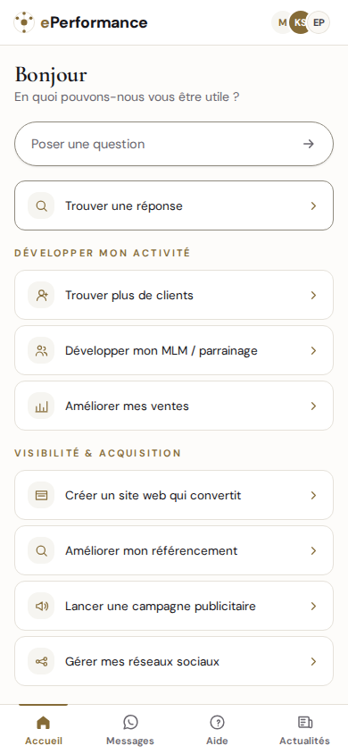
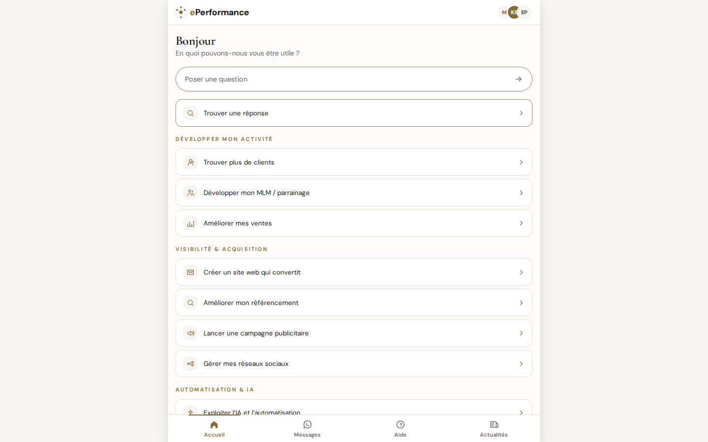

Elle répond dans le fil
Une question, une réponse rédigée pour votre situation : un angle, un ordre de grandeur, une prochaine étape. Pas de catalogue à parcourir.
L’assistante IA d’ePerformance. Vous écrivez ce qui vous bloque — trouver des clients, gagner en visibilité, automatiser — et Mia répond avec un angle, un exemple et la prochaine étape.
Aucun compte, aucune carte bancaire. Elle s’ouvre dans le navigateur ; vous pouvez l’installer pour l’avoir sous la main.
Mia est installée sur cet appareil

L’application Mia, écran d’accueil
Mia ne demande pas de remplir un questionnaire avant de répondre. Vous posez votre question en une phrase ; la réponse arrive dans le fil, et vous pouvez enchaîner.
Une question, une réponse rédigée pour votre situation : un angle, un ordre de grandeur, une prochaine étape. Pas de catalogue à parcourir.
Mia suit le thème de votre appareil, et la bascule est à un bouton. La lecture reste confortable de jour comme de nuit.
La même application du petit au grand écran : barre d’onglets sur téléphone, colonne centrée sur ordinateur — et l’installation possible sur les deux.

Mia sur ordinateur — même application, colonne centrée
Ce sont les neuf domaines sur lesquels Mia est entraînée à répondre. Ils sont aussi proposés en un clic à l’ouverture de l’application.
Installée, Mia s’ouvre en plein écran, comme une application, et se lance depuis votre écran d’accueil. Rien n’est envoyé à un magasin d’applications : c’est votre navigateur qui l’installe, et vous la désinstallez quand vous voulez.
Depuis Safari :
Depuis Chrome :
Depuis Chrome ou Edge :
Votre navigateur ne propose rien de tout cela ? Mia fonctionne quand même : elle s’utilise dans l’onglet, et votre conversation est conservée.
Non. Mia est l’assistante IA d’ePerformance : elle répond seule, à partir de la base de connaissances et des méthodes d’ePerformance. Quand un conseiller humain reprend une conversation, son nom s’affiche à la place de celui de Mia.
Non. Vous ouvrez Mia et vous écrivez. Aucun compte n’est nécessaire pour poser une question, ni pour lire la réponse.
Elle est conservée douze mois, puis supprimée automatiquement. Le détail des données traitées figure dans la politique de confidentialité.
Oui pour répondre : Mia rédige ses réponses côté serveur. Hors ligne, l’application affiche un écran d’attente clair et reprend d’elle-même dès que la connexion revient.
Non. Mia débloque une question précise ; quand le sujet demande une étude, un devis ou un accompagnement, elle oriente vers un conseiller ePerformance.
Sur iPhone, iPad, Android et ordinateur, dans un navigateur récent. Elle s’installe comme une application sur les quatre, sans passer par un magasin d’applications.
Mia répond en quelques secondes. Vous pourrez toujours reprendre la conversation plus tard.